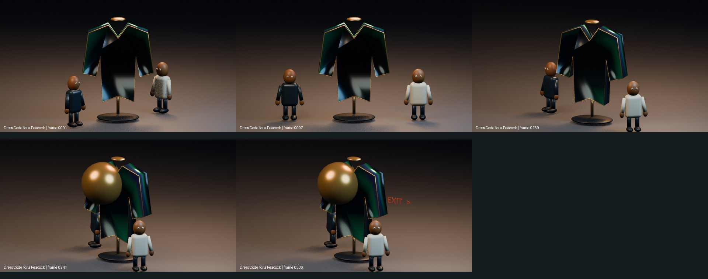
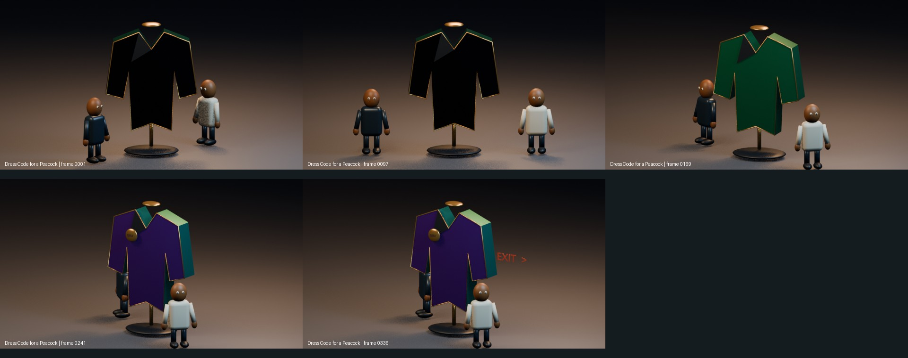
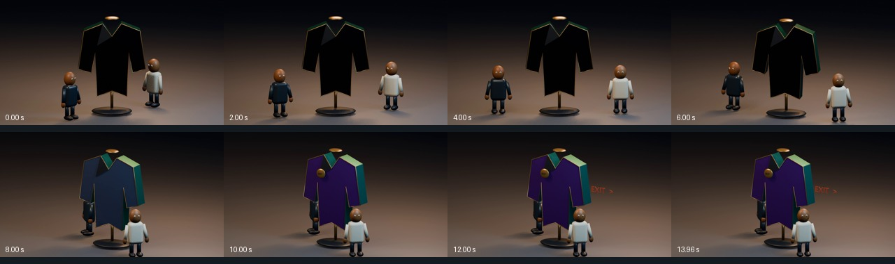

CONCEPT 07 · 14 SECONDS · SOUND
Dress Code for a Peacock
Ready · 14 seconds
Story, original pitch and adaptation
A beetle-shell jacket stands motionless between two monochrome officials. As the camera and officials move around it, the jacket shifts from black to emerald and violet. A BEST medal and an EXIT verdict arrive together.
- 0–4 s: a black jacket passes inspection
- 4–9 s: observers orbit and brilliant color appears
- 9–12 s: medal and EXIT arrow arrive together
- 12–14 s: hold their contradictory verdicts
The original concept
At a monochrome banquet a guest’s beetle-shell jacket looks regulation black to the doorman and scandalously green to the hostess. Both walk around him to prove their case. The guest never moves and is eventually awarded best dressed and ejected in the same shot.
Angle-dependent emerald and violet color can produce a comic contradiction within sculptural fashion photography.
Getty AAT anchor: iridescence.
Construction and iteration
Editable SVG profiles drive Blender geometry or scene structure. The saved Blender scene contains baked animation. Original ElevenLabs music and effects provide the soundtrack. This film uses procedural vector and 3D construction.
SVG input · Blender scene · Timeline and brief · Encoded-film checks · Rubric assessment
Compare the first preview with the repaired preview
First preview

Repaired preview

Frames from the film
